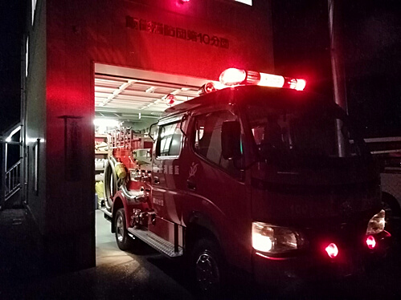

第10分団
令和2年度トピックス
◆2021年3月7日（日）火防巡視3月7（日）に第10分団の管轄地域において、火防巡視を行いました。
◆2020年12月26日（土）歳末特別警戒
12月25日から年末までの期間、飯能消防団の各詰所にて歳末特別警戒が行われました。

◆2020年10月25日（日）全団員訓練
飯能日高消防署にて全団員訓練が行われました。
◆2020年9月13日（日）中継送水訓練
吾野地区にて中継送水訓練を実施しました。。
◆2020年7月5日（日）分団訓練
全分団による訓練が飯能日高消防署にて行われました。
令和元年度トピックス
◆2020年2月23日（日）体力強化訓練体力強化訓練として、岩沢グラウンド河川敷の清掃を行いました。昨年の台風で氾濫した河川敷には流木や土砂が大量に残されていましたが、各団員の協力により速やかな除去作業を実施することができました。
◆2020年1月11日（土）出初式
飯能市役所にて出初式が行われました。今年も地域の安全の為、日々励んでまいりますのでよろしくお願いします。また第10分団では随時新入団員を募集しています。
◆2019年12月30日（月）歳末特別警戒
12月25日から年末までの期間、飯能消防団の各詰所にて歳末特別警戒を行います。
◆2019年11月17日（日）特別点検予習
特別点検の予習が飯能日高消防署にて行われました。各団員は11月23日の特別訓練に向けて、行進訓練や機械器具点検に励みました。

◆2019年11月3日（日）飯能まつり警備
飯能まつりが11月2日(土)・3日(日)に開催されました。消防団員は市民の安全を守るため、市内主要交差点の警備を行いました。
◆2019年9月17日（火）普通救命講習
普通救命講習が飯能日高消防署にて行われました。市民の安全を守るため、人工呼吸やAEDの扱いについての講習を受けました。
◆2019年8月24日（土）吾野宿まつり
吾野宿まつりが吾野地区にて開催されました。消防団としては、活動内容を市民の方に理解してもらうための広報活動を行いました。また例年同様、花火の鎮火確認等の活動も行いました。
◆2019年8月11日（日）北川夏まつり警備
旧北川小学校にて毎年恒例の北川夏まつりが行われました。第10分団は出店の準備や、駐車場の誘導等を行いました。
◆2019年7月7日（日）中継送水訓練
飯能市林道吾野飛村線にて5分団、6分団、10分団合同による中継送水訓練が行われました。

◆2019年5月26日（日）ツーデーマーチ
飯能市内にて第17回飯能新緑ツーデーマーチが行われました。
第10分団は吾野駅周辺の警備を行いました。
◆2019年5月19日（日）分団訓練
全分団による訓練が飯能日高消防署にて行われました。分団訓練終了後、吾野地区に移動して放水訓練も行いました。
◆2019年4月14日（日）飯能消防団入団式
飯能消防団入団式が挙行され、第10分団に新入団員が入団しました。今年度も飯能消防団第10分団をよろしくお願いします。